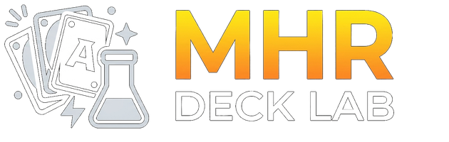

Mekanik

Deck yang tersimpan di akunmu, dan koleksi kartu yang sudah kamu punya.
Masuk ke akun untuk melihat deck tersimpan dan koleksi kartumu.
Catat berapa salinan tiap kartu yang sudah kamu punya (ketik langsung atau pakai tombol +/-, sampai 1000 salinan) — datanya tersimpan ke akun, bukan cuma di perangkat ini. Klik gambar atau nama kartu untuk lihat detail lengkapnya.
Deck-deck dari babak Top di turnamen resmi Marvel Hero Rush. Muat salah satunya ke Deck Builder untuk dilihat isinya — deck yang sedang Anda susun tidak tertimpa.
Jadwal main mingguan Marvel Hero Rush di Local Game Shop — santai, mingguan, di beberapa kota. Klik nama toko atau tombol lokasi untuk membuka Google Maps. Jam main ditulis lengkap dengan zona waktunya (WIB / WITA / WIT). Untuk memastikan jadwal, menanyakan format turnamen, atau minta link grup WhatsApp komunitas, hubungi tokonya langsung — keterangan lengkap ada di bawah.
Akun dipakai untuk menyimpan & membagikan deck, dan melacak koleksi kartu Anda (segera hadir).
Masuk sebagai
Saat mencetak PDF-nya, pilih skala 100% / "Ukuran asli" — jangan "Fit to page"
atau "Sesuaikan halaman", karena ukurannya akan menyusut beberapa milimeter dan tidak
lagi pas dengan kartu asli di sleeve. Sebaiknya cetak di kertas tebal (mis. 210–260 gsm)
atau tempel di belakang kartu biasa di dalam sleeve.
Gambar mengikuti bahasa aktif dan pilihan varian artwork Anda; kalau versi
Inggris atau variannya belum ada, otomatis dipakai gambar Indonesia versi utama.
Semua gambar ber-watermark SAMPLE. Kartu proxy hanya untuk latihan dan uji coba
deck pribadi — bukan kartu resmi, tidak sah untuk turnamen, dan tidak untuk dijual.
Panel ini hanya muncul untuk akun admin.